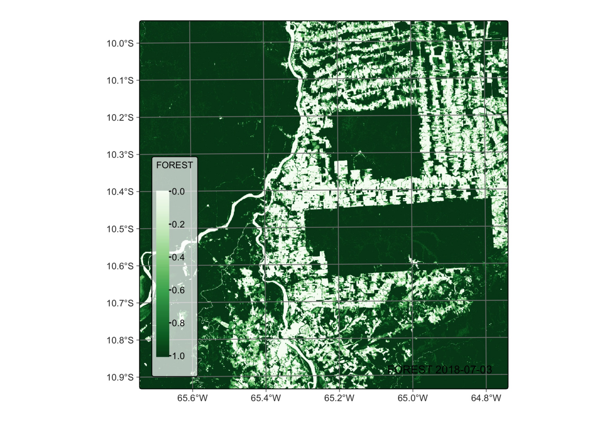
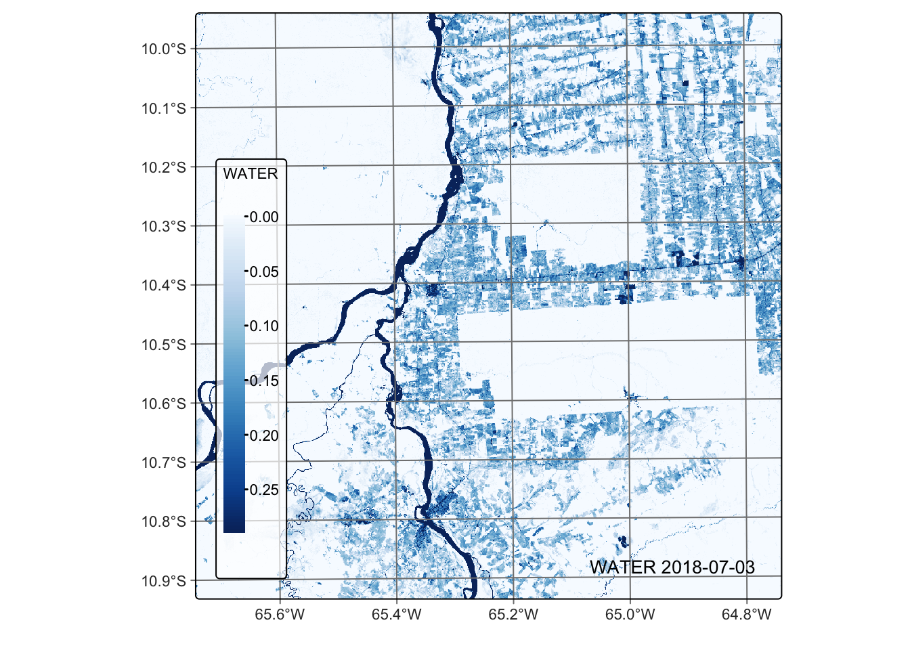
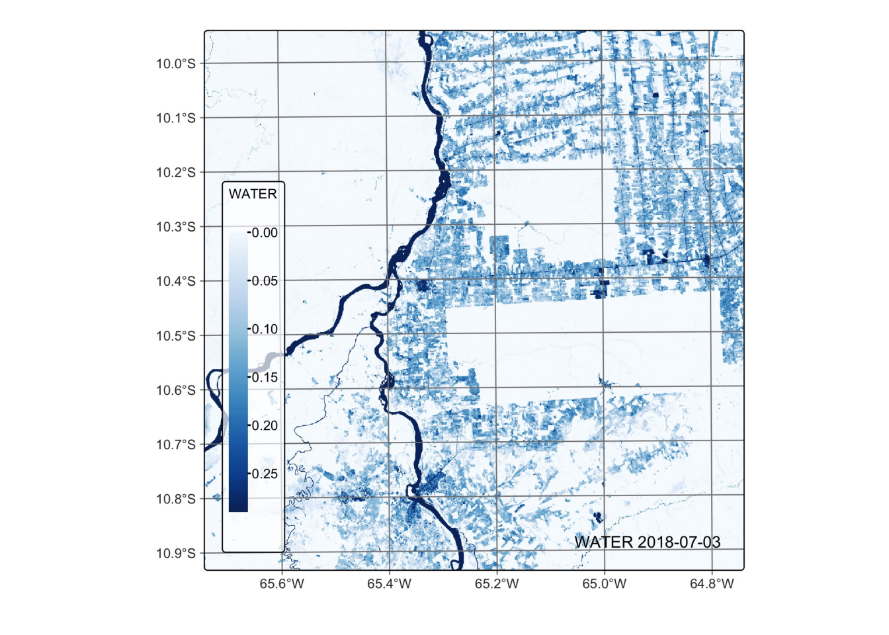
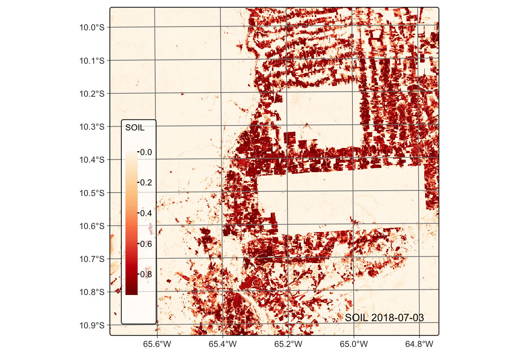
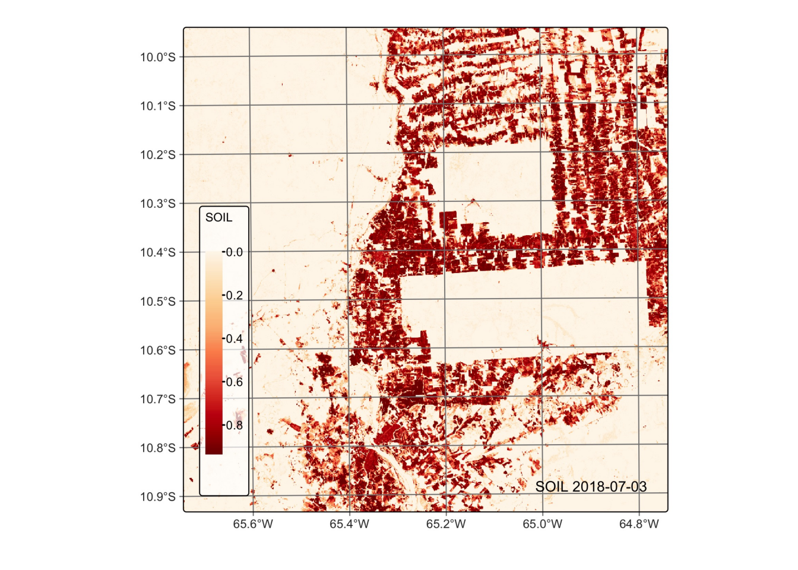

9 Spectral mixture analysis
Configurations to run this chapter
# load "pysits" library
from pysits import *
from pathlib import Path
# set tempdir if it does not exist
tempdir_py = Path.home() / "sitsbook/tempdir/Python/dc_cubeoperations"
tempdir_py.mkdir(parents=True, exist_ok=True)9.1 Introduction
Many pixels in images of medium-resolution satellites such as Landsat or Sentinel-2 contain a mixture of spectral responses of different land cover types inside a resolution element [1]. In many applications, it is desirable to obtain the proportion of a given class inside a mixed pixel. For this purpose, the literature proposes mixture models; these models represent pixel values as a combination of multiple pure land cover types [2]. Assuming that the spectral response of pure land cover classes (called endmembers) is known, spectral mixture analysis derives new bands containing the proportion of each endmember inside a pixel.
Applications of spectral mixture analysis in remote sensing include forest degradation [6], wetland surface dynamics [7], and urban area characterization [8]. These models providing valuable information for a wide range of applications, from land mapping and change detection to resource management and environmental monitoring.
9.2 Methods
The most used method for spectral mixture analysis is the linear model [2]. The main idea behind the linear mixture model is that the observed pixel spectrum can be expressed as a linear combination of the spectra of the pure endmembers, weighted by their respective proportions (or abundances) within the pixel. Mathematically, the model can be represented as: \[
R_i = \sum_{j=1}^N a_{i,j}*x_j + \epsilon_i, i \in {1,...M}, M > N,
\] where \(i=1,..M\) is the set of spectral bands and \(j=1,..N\) is the set of land classes. For each pixel, \(R_i\) is the reflectance in the i-th spectral band, \(x_j\) is the reflectance value due to the j-th endmember, and \(a_{i,j}\) is the proportion between the j-th endmember and the i-th spectral band. To solve this system of equations and obtain the proportion of each endmember, sits uses a non-negative least squares (NNLS) regression algorithm, which is available in the R package RStoolbox and was developed by Jakob Schwalb-Willmann, based on the sequential coordinate-wise algorithm (SCA) proposed on Franc et al. [9].
9.3 Running mixture models in SITS
To run the mixture model in sits, it is necessary to inform the values of pixels which represent spectral responses of a unique class. These are the so-called “pure” pixels. Because the quality of the resulting endmember images depends on the quality of the pure pixels, they should be chosen carefully and based on expert knowledge of the area. Since sits supports multiple endmember spectral mixture analysis [10], users can specify more than one pure pixel per endmember to account for natural variability.
In sits, spectral mixture analysis is done by sits_mixture_model(), which has two mandatory parameters: cube (a data cube) and endmembers, a named table (or equivalent) that defines the pure pixels. The endmembers table must have the following named columns: (a) type, which defines the class associated with an endmember; (b) names, the names of the bands. Each line of the table must contain the value of each endmember for all bands (see example).
To improve readability, we suggest that, in R, the endmembers parameters be defined as a tribble. A tribble is a tibble with an easier to read row-by-row layout. In the example below, we define three endmembers for classes Forest, Soil, and Water. Note that the values for each band are expressed as integers ranging from 0 to 10,000. We use the same data cube which was used in the previous chapter.
In Python, the endmembers are defined as a pandas data frame which encapsulates a dictionary. The first name of the dictionary should be class and its values will be the names of the endmember bands. The other names of the dictionary are the bands used to compute the mixture model, as shown in the example below.
Create Sentinel-2 Data Cube
# Create an non-regular data cube from AWS
s2_cube <- sits_cube(
source = "AWS",
collection = "SENTINEL-S2-L2A-COGS",
tiles = "20LKP",
bands = c("B02", "B03", "B04",
"B05", "B06", "B07",
"B08", "B8A", "B11",
"B12","CLOUD"),
start_date = as.Date("2018-07-01"),
end_date = as.Date("2018-08-31"))
# Regularize the cube to 15 day intervals
reg_cube <- sits_regularize(
cube = s2_cube,
output_dir = tempdir_r,
res = 60,
period = "P15D",
multicores = 4)# Create an non-regular data cube from AWS
s2_cube = sits_cube(
source = "AWS",
collection = "SENTINEL-S2-L2A-COGS",
tiles = "20LKP",
bands = ("B02", "B03", "B04",
"B05", "B06", "B07",
"B08", "B8A", "B11",
"B12","CLOUD"),
start_date = "2018-07-01",
end_date = "2018-08-31")
# Regularize the cube to 15 day intervals
reg_cube = sits_regularize(
cube = s2_cube,
output_dir = tempdir_py,
res = 60,
period = "P15D",
multicores = 4)Generate the mixture model
# Define the endmembers for three classes and six bands
em <- tibble::tribble(
~class, ~B02, ~B03, ~B04, ~B8A, ~B11, ~B12,
"forest", 200, 352, 189, 2800, 1340, 546,
"soil", 400, 650, 700, 3600, 3500, 1800,
"water", 700, 1100, 1400, 850, 40, 26)
# Generate the mixture model
reg_cube <- sits_mixture_model(
data = reg_cube,
endmembers = em,
multicores = 4,
memsize = 12,
output_dir = tempdir_r)# Import pandas
import pandas as pd
# Define the endmembers for three classes and six bands
em = pd.DataFrame({
"class": ["forest", "soil", "water"],
"B02": [200, 400, 700],
"B03": [352, 650, 1100],
"B04": [189, 700, 1400],
"B8A": [2800, 3600, 850],
"B11": [1340, 3500, 40],
"B12": [546, 1800, 26]
})
# Generate the mixture model
reg_cube = sits_mixture_model(
data = reg_cube,
endmembers = em,
multicores = 4,
memsize = 12,
output_dir = tempdir_py
)Visualize forest endmember
# Plot the FOREST for the first date using the Greens palette
plot(reg_cube, band = "FOREST", palette = "Greens")
# Plot the FOREST for the first date using the Greens palette
plot(reg_cube, band = "FOREST", palette = "Greens")
Visualize water endmember
# Plot the water endmember for the first date using the Blues palette
plot(reg_cube, band = "WATER", palette = "Blues")
# Plot the water endmember for the first date using the Blues palette
plot(reg_cube, band = "WATER", palette = "Blues")
Visualize soil endmember
# Plot the SOIL endmember for the first date using the orange red (OrRd) palette
plot(reg_cube, band = "SOIL", palette = "OrRd")
# Plot the SOIL endmember for the first date using the orange red (OrRd) palette
plot(reg_cube, band = "SOIL", palette = "OrRd")
9.4 Summary
Linear mixture models (LMM) improve the interpretation of remote sensing images by accounting for mixed pixels and providing a more accurate representation of the Earth’s surface. LMMs provide a more accurate representation of mixed pixels by considering the contributions of multiple land classes within a single pixel. This can lead to improved land cover classification accuracy compared to conventional per-pixel classification methods, which may struggle to accurately classify mixed pixels.
LMMs also allow for the estimation of the abundances of each land class within a pixel, providing valuable sub-pixel information. This can be especially useful in applications where the spatial resolution of the sensor is not fine enough to resolve individual land cover types, such as monitoring urban growth or studying vegetation dynamics. By considering the sub-pixel composition of land classes, LMMs can provide a more sensitive measure of changes in land cover over time. This can lead to more accurate and precise change detection, particularly in areas with complex land cover patterns or where subtle changes in land cover may occur.